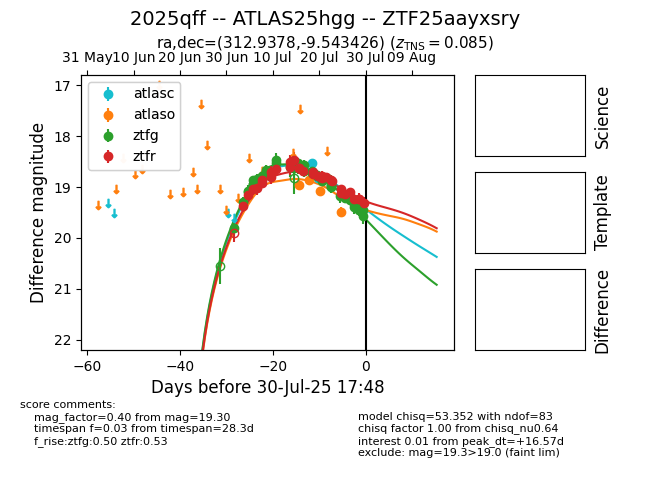

Target 2025qff at 2025-07-30 17:48, see:
FINK: fink-portal.org/2025qff
Lasair: lasair-ztf.lsst.ac.uk/objects/2025qff
ALeRCE: alerce.online/object/2025qff
TNS: wis-tns.org/object/2025qff
YSE: ziggy.ucolick.org/yse/transient_detail/2025qff
alt names
ZTF25aayxsry (ztf,fink)
2025qff (tns,yse)
ATLAS25hgg (atlas)
coordinates:
equatorial (ra, dec) = (312.9378,-9.54343)
galactic (l, b) = (38.1420,-31.02915)
photometry
last atlasc=18.98, atlaso=19.49, ztfg=19.46, ztfr=19.30
3 atlasc, 4 atlaso, 45 ztfg, 31 ztfr detections
